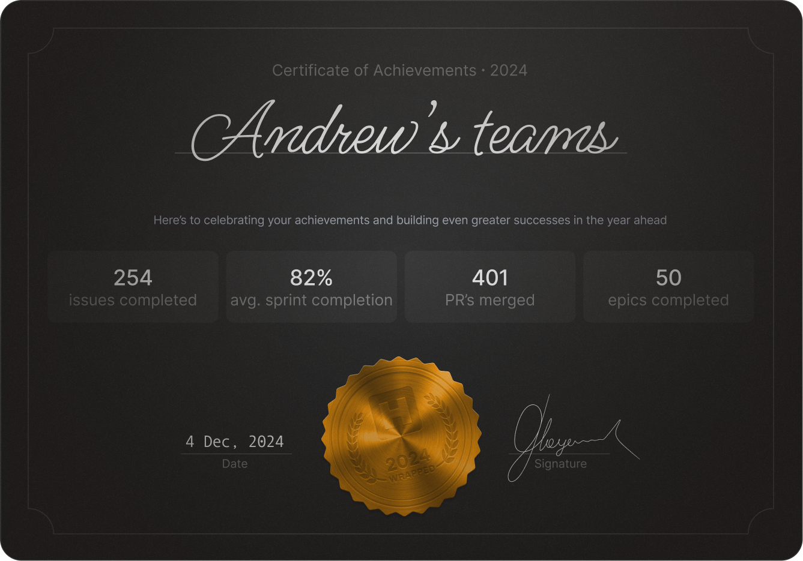
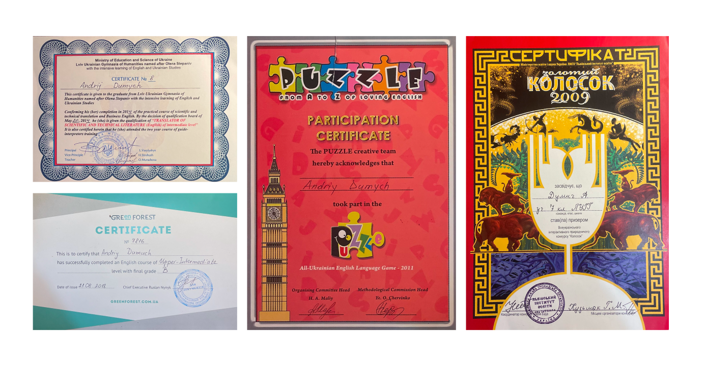
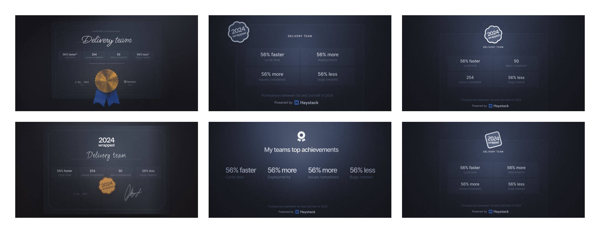

Rethinking the year-end recap
At the end of each year, many products release a personalized recap — popularized by Spotify Wrapped. We had done similar reports in the past, but this time we wanted to try something different — more emotional, memorable, and tactile.

Instead of another digital report or story-like summary, we created a digital certificate — inspired by the real A5 paper awards many of us received in school or at competitions.

Thought they were useless... until I used them as design inspo years later. Who’s laughing now?
I realized these physical tokens had a nostalgic, joyful quality — and thought, why not bring that feeling into our product?

We shipped it as a year-end thank-you for our users. It stood out — playful, unexpected, and appreciated. It was a small but meaningful break from typical product work and reminded us that delight can be a valuable feature too: